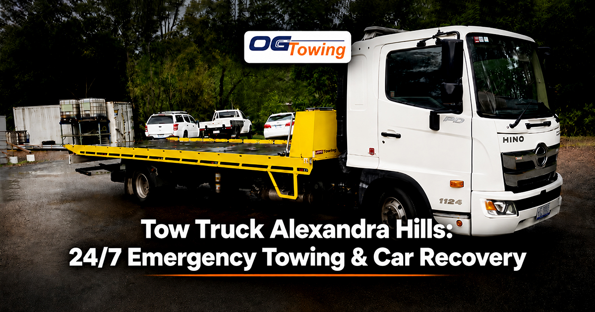

Tow Truck Alexandra Hills: 24/7 Emergency Towing & Car Recovery
A vehicle breakdown can happen when you least expect it. Whether your car stops working on Finucane Road, you have an accident near Vienna Road, or your vehicle will not start from your driveway, getting reliable towing assistance quickly can make a stressful situation much easier
For drivers in Alexandra Hills and surrounding Redlands suburbs, OG Towing provides 24/7 towing and vehicle recovery services. The company is based in Capalaba and services Alexandra Hills and nearby areas including Birkdale, Cleveland, Thornlands and Wellington Point.
24/7 Tow Truck Service in Alexandra Hills
Car problems do not follow business hours. A breakdown can happen early in the morning, late at night, on a weekend or during a public holiday.
OG Towing operates 24 hours a day, 7 days a week, providing towing assistance throughout Alexandra Hills. The service covers a range of situations, including vehicle breakdowns, accident recovery, insurance towing and local vehicle transport.
If your vehicle is no longer safe or practical to drive, arranging a tow can help you avoid causing additional damage or creating a roadside safety hazard.
For drivers looking for a tow truck in Alexandra Hills, contacting a local towing provider can help arrange vehicle recovery based on the location and condition of the vehicle.
Common Reasons You May Need a Tow Truck
There are several situations where calling a tow truck is safer and more practical than trying to drive your vehicle.
1. Vehicle Breakdown
A mechanical or electrical failure can leave your vehicle stranded on the roadside. Issues such as engine problems, overheating, transmission failure or other mechanical faults may require your vehicle to be transported to a mechanic.
A professional tow truck can move your vehicle safely from Alexandra Hills to your preferred workshop or another suitable destination.
If you are experiencing a breakdown elsewhere in the Redlands area, you can also explore OG Towing's Redland Bay towing service for local towing assistance.
2. Accident Recovery
After a collision, a vehicle may not be safe to drive even if it appears to be running.
Accident towing can help move damaged vehicles away from the accident location and transport them to a repairer, inspection centre or another nominated destination. OG Towing lists accident recovery and insurance towing among its Alexandra Hills services.
If you have been involved in an accident, follow Queensland road-safety requirements and instructions from emergency services. The Queensland Government road safety information provides information about road rules and safety in Queensland.
3. Car Won't Start
Sometimes a vehicle simply refuses to start. A dead battery, electrical issue, starter problem or other fault can leave you stuck at home, in a car park or on the roadside.
If the issue cannot be resolved at the location, a tow truck can transport the vehicle to a mechanic for inspection.
Before requesting a tow, let the operator know whether the vehicle can be started, whether it can roll freely and whether there is any visible damage. This information can help determine the appropriate towing method.
4. Towing From a Driveway or Home
Not every towing job happens on a major road.
OG Towing provides towing from residential properties, including homes, unit complexes and private driveways in Alexandra Hills. This can be useful when a damaged, unregistered or non-running vehicle needs to be moved.
Towing From Roads Around Alexandra Hills
Alexandra Hills has a mixture of residential streets, shopping areas and connecting roads leading toward surrounding Redlands suburbs.
If your vehicle breaks down while travelling through the area, providing your exact location and nearby landmark can help the towing operator find you more easily.
OG Towing's Alexandra Hills service covers major and minor roads throughout the suburb and connecting routes toward Capalaba, Cleveland and Wellington Point.
When calling for assistance, it is helpful to provide:
- Your exact location
- The direction you are travelling
- Vehicle make and model
- Whether the vehicle can move
- The type of problem, if known
- Your preferred destination for the vehicle
For information about Queensland road rules, the Queensland Government Department of Transport and Main Roads is an authoritative external resource.
Tow Truck Alexandra Hills From $99
OG Towing advertises local light-vehicle towing from $99, with the final price depending on factors such as the vehicle and towing requirements. The Alexandra Hills tow truck service also states that the company operates 24/7.
Getting a price before the tow begins can help you understand the expected cost and avoid confusion.
For longer-distance towing, such as transporting a vehicle from Alexandra Hills to a workshop elsewhere in Brisbane, the price may vary according to distance and vehicle requirements.
Towing to Mechanics and Dealerships
If your vehicle cannot be driven, you may need to get it to a mechanic, dealership or inspection centre.
OG Towing states that it can transport vehicles from Alexandra Hills to a workshop, dealership or inspection centre of the customer's choice.
Before the tow truck arrives, have the destination details ready. If the mechanic has specific drop-off instructions or opening hours, providing these details to the towing operator can make the process easier.
If you need towing from another Redlands location, OG Towing also provides tow truck services in Cleveland and surrounding suburbs.
Towing Services Across Nearby Redlands Suburbs
A vehicle problem does not always happen exactly where you expect it. Drivers travelling around the Redlands may also need towing assistance in nearby suburbs.
OG Towing lists service coverage across Alexandra Hills, Birkdale, Cleveland, Thorneside, Wellington Point, Mount Cotton, Victoria Point, Lota, Redland Bay and Capalaba.
This makes local towing useful for drivers who need to move their vehicle between nearby Redlands suburbs or from the Redlands to another Brisbane destination.
Drivers in nearby areas can also explore the company's Victoria Point towing service when they need local vehicle recovery.
What Should You Do While Waiting for a Tow Truck?
If your vehicle breaks down, your first priority should be safety.
If it is possible and safe to do so, move the vehicle away from moving traffic. Turn on your hazard lights and avoid standing in an unsafe position near the road.
If you have experienced an accident, follow the instructions of emergency services and avoid attempting to drive a seriously damaged vehicle.
When contacting the tow truck operator, provide your exact location and explain the situation clearly. This can help the operator determine what type of assistance is required.
For additional Queensland road-safety information, drivers can refer to the Queensland Government road safety resources.
Why Choose a Local Alexandra Hills Tow Truck?
Using a towing company that services Alexandra Hills and the surrounding Redlands area can make communication and vehicle transport more convenient.
A local towing provider can assist with:
- Emergency vehicle breakdowns
- Accident recovery
- Local car towing
- Insurance towing
- Vehicle transport
- Towing from homes and driveways
- Transport to mechanics and dealerships
- Lowered vehicle transport
OG Towing states that it has more than 16 years of experience and has completed more than 1,500 towing jobs.
For drivers around the Redlands, choosing a towing provider familiar with Alexandra Hills and nearby suburbs can make it easier to arrange local vehicle transport.
Need a Tow Truck in Alexandra Hills?
A breakdown or accident can leave you unsure about what to do next. If your vehicle cannot be safely driven, professional towing can provide a practical way to move it to a mechanic, dealership, repairer or another location.
OG Towing provides 24/7 towing services in Alexandra Hills and surrounding Redlands suburbs, with local light-vehicle towing advertised from $99.
For towing assistance in Alexandra Hills, contact OG Towing on 0430 917 742 for service availability and a quote.
FAQs
OG Towing advertises local light-vehicle towing from $99. The final price can
depend on the vehicle and towing requirements.
Yes. OG Towing's Alexandra
Hills towing page states that its towing service
operates 24 hours a day, 7 days a week.
Yes. OG Towing states that it provides towing from homes, unit complexes and
private driveways across Alexandra Hills.
Yes. Vehicles can be transported from Alexandra Hills to a workshop, dealership
or inspection centre of your choice.
Yes. Accident recovery and insurance towing are listed among OG Towing's
Alexandra Hills services.
For towing assistance, OG Towing lists 0430 917 742
and operates 24/7.